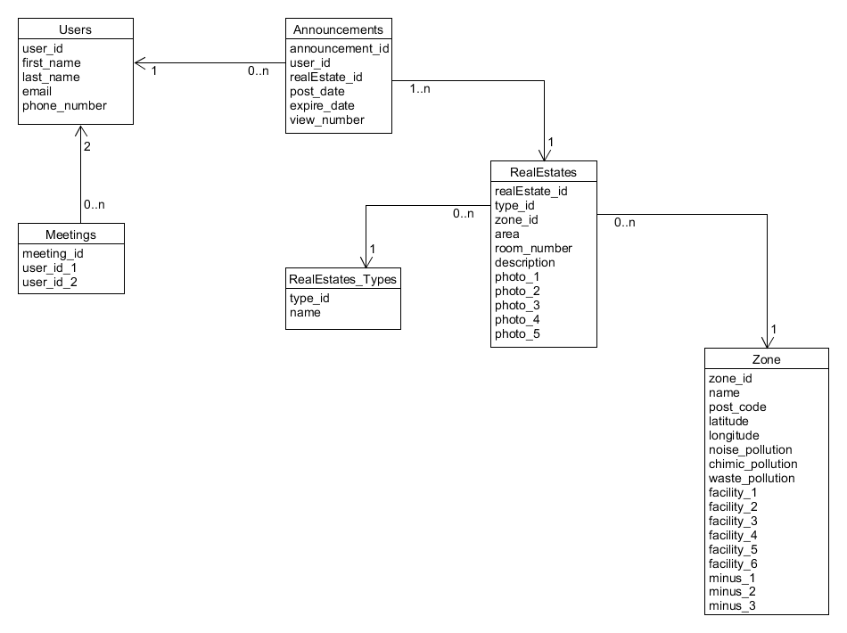

Perfect Place Finder
Cuprins:
Descriere
E necesara o aplicatie Web menita a gestiona eficient tranzactiile imobiliare. Sistemul va permite managementul unor imobile spre vanzare si/sau inchiriere, inclusiv informatii precum descriere, pret, coordonatele locatiei, date de contact, starea cladirii, facilitati oferite, riscuri posibile etc.
Workflow
- User flow

Tehnologii Folosite
- HTML5
HTML este o formă de marcare orientată către prezentarea documentelor text pe o singura pagină, utilizând un software de redare specializat, numit agent utilizator HTML, cel mai bun exemplu de astfel de software fiind browserul web. HTML furnizează mijloacele prin care conținutul unui document poate fi adnotat cu diverse tipuri de metadate și indicații de redare. Obiectivele sale principale au fost acelea de a îmbunătăți limbajul cu un suport pentru cele mai recente apariții multimedia în același timp menținândul ușor de citit de oameni și bine înțeles de computere și deviceuri (browsere web, parsere, etc.).
- BOOTSTRAP
Bootstrap este un framework de front-end, open-source, dezvoltat de Twitter. Frameworkul contine templete-uri de HTML si CSS pentru fonturi, forme, butoane, meniuri si alte componente pentru interfanta. De asemenea dispune de o librarie speciala construita peste Angular ce ofera posibilitatea manipularii elementelor in stil java script.
- CSS3
CSS (Cascading Style Sheets) este un standard pentru formatarea elementelor unui document HTML. Stilurile se pot atașa elementelor HTML prin intermediul unor fișiere externe sau în cadrul documentului, prin elementul și/sau atributul style. CSS se poate utiliza și pentru formatarea elementelor XHTML, XML și SVGL. CSS3 reprezintă un upgrade ce aduce câteva atribute noi și ajută la dezvoltarea noilor concepte in webdesign.
- JAVA
Java este un limbaj de programare orientat-obiect, puternic tipizat, conceput de către James Gosling la Sun Microsystems (acum filială Oracle) la începutul anilor ʼ90, fiind lansat în 1995. Acesta este utilizat în prezent cu succes și pentru programarea aplicațiilor destinate intranet-urilor. Limbajul împrumută o mare parte din sintaxă de la C și C++, dar are un model al obiectelor mai simplu și prezintă mai puține facilități de nivel jos. Un program Java compilat, corect scris, poate fi rulat fără modificări pe orice platformă care e instalată o mașină virtuală Java (engleză Java Virtual Machine, prescurtat JVM). Acest nivel de portabilitate (inexistent pentru limbaje mai vechi cum ar fi C) este posibil deoarece sursele Java sunt compilate într-un format standard numit cod de octeți (engleză byte-code) care este intermediar între codul mașină (dependent de tipul calculatorului) și codul sursă.
- ANGULAR CLI
AngularCLI este un instrument de interfață pentru linia de comandă care poate crea un proiect, adăuga fișiere și poate efectua o varietate de sarcini de dezvoltare în curs de desfășurare, cum ar fi testarea, gruparea și implementarea.
- SPRING
Spring Framework este o platformă cu sursă deschisă pentru simplificarea scrierii aplicațiilor în limbajul Java, dar există și o versiune pentru Platforma .NET. Deși este folosit în principal pentru platforma Java EE, Spring poate fi utilizat pe orice aplicație Java. Este văzut în comunitatea programatorilor ca o alternativă la modelul Enterpise JavaBeans (EJB).
- AJAX
Ajax (sau AJAX), prescurtare pentru Asynchronous JavaScript and XML, este o tehnică de programare pentru crearea de aplicații web interactive. Intenția este să facă paginile web să devină mai rapide și deci mai acceptate, prin schimbul în fundal al unor cantități mici de date cu serverul, astfel încât să nu fie nevoie ca pagina să fie reîncărcată la fiecare acțiune a utilizatorului. Aceasta are ca scop creșterea interactivității, vitezei și ușurinței în utilizare a aplicațiilor web. Ajax nu este o tehnologie în sine. Termenul este folosit pentru definirea aplicațiilor web ce folosesc un ansamblu de tehnologii: HTML sau XHTML pentru structura semantică a informațiilor; CSS pentru prezentarea informațiilor; Javascript pentru interactivitate, pentru procesarea informațiilor prezentate; Obiectul XMLHttpRequest pentru schimbul și manipularea informațiilor într-o manieră asincronă cu server-ul web; XML este folosit de obicei pentru transferarea datelor între server și client, deși orice format funcționează, inclusiv HTML preformatat, text simplu etc.
- ORACLE
Oracle consta dintr-un set complet de constructori de aplicatii si produse pentru utilizatori,cautand sa asigure solutii complete in tehnologia informatiei. Aplicatiile Oracle sunt portabile peste un numar mare de statii de lucru si sisteme de operare, de la calculatoare personale la procesoare paralele. Oracle este inzestrat cu un flexibil Sistem de Management al Bazelor de Date(DBMS)-Serverul Oracle-pentru stocarea si managementul informatiei utilizate de aplicatii. Ultimul server Oracle ,ORACLE 7,conduce o baza de date cu toate avantajele unei structuri relationale,avand in plus capacitatea de a stoca si executa obiecte de tip baza de date precum proceduri si mecanisme de siguranta. Oracle este baza de date numărul 1 proiectată pentru cloud .
- HIBERNATE
Object / Relational Mapping (ORM) este o tehnică de programare ce face posibilă accesarea și manipularea obiectelor fără ca programatorii să fie interesați de sursa de date de unde provin aceste obiecte. Această tehnică a apărut din nevoia de a depăși diferențele de paradigmă dintre modelul orientat pe obiecte (susținut de limbajele de programare de nivel înalt actuale) și modelul relațional (utilizat de cele mai populare sisteme de gestiune a bazelor de date).Este scris in Java si este destinat pentru rezolvarea problemelor de persistenta ale aplicatiilor J2SE si J2EE. In prezent este foarte des folosit dintre framework-urile ORM existente, in aplicatiile Java pentru web.
- GitHub
GitHub este un serviciu de gazduire web pentru proiecte de dezvoltare a software-ului care utilizeaza sistemul de control al versiunilor Git. GitHub ofera planuri tarifare pentru depozite private, si conturi gratuite pentru proiecte open source.

Diagrama de arhitectura

Structura Bazei de Date

Raport Tehnic
-
Etapele realizarii proiectului:
- Realizarea arhitecturii bazei de date
- Popularea bazei de date
- Crearea paginilor de Start + Log in+ Registre
- Crearea paginilor pentru user (Home, My account , Mail, Meetings , Announces)
- Realizarea back-endului
Realizarea arhitecturii bazei de date
- Crearea unei diagrame UML pentru a face legaturile dintre tabelele bazei de date . Diagrama creeaza o privire in ansamblu a site-ului .
Popularea bazei de date
- A constat in generarea de date relevante pentru popularea tabelelor .
Script:
--Drops drop table users1; drop table announcements; drop table meetings; drop table users; drop table realEstates; drop table realEstate_types; drop table zone; drop table logs; / --Log table create table logs( time timestamp, action varchar(400) ); --Table for import users_data CREATE TABLE "USERS1" ( "ID" NUMBER(10,0), "NAME" VARCHAR2(255 BYTE), "USERNAME" VARCHAR2(255 BYTE), "USER_ROLE" VARCHAR2(255 BYTE), "CREATED_AT" TIMESTAMP (6), "UPDATED_AT" TIMESTAMP (6) ); Insert into USERS1 (ID,NAME,USERNAME,USER_ROLE,CREATED_AT,UPDATED_AT) values (232,'Alexandra Citea','alexandra.citea','user',to_timestamp('18-OCT-16 02.14.36.000000000 PM','DD-MON-RR HH.MI.SSXFF AM'),to_timestamp('18-OCT-16 02.14.36.000000000 PM','DD-MON-RR HH.MI.SSXFF AM')); Insert into USERS1 (ID,NAME,USERNAME,USER_ROLE,CREATED_AT,UPDATED_AT) values (234,'Mihaela Lazar','mihaela.lazar','user',to_timestamp('18-OCT-16 02.31.33.000000000 PM','DD-MON-RR HH.MI.SSXFF AM'),to_timestamp('18-OCT-16 02.31.33.000000000 PM','DD-MON-RR HH.MI.SSXFF AM')); Insert into USERS1 (ID,NAME,USERNAME,USER_ROLE,CREATED_AT,UPDATED_AT) values (238,'Valentin Damoc','valentin.damoc','user',to_timestamp('18-OCT-16 02.42.43.000000000 PM','DD-MON-RR HH.MI.SSXFF AM'),to_timestamp('15-NOV-16 04.29.43.000000000 PM','DD-MON-RR HH.MI.SSXFF AM')); Insert into USERS1 (ID,NAME,USERNAME,USER_ROLE,CREATED_AT,UPDATED_AT) values (239,'Andreea Ghergu','andreea.ghergu','user',to_timestamp('18-OCT-16 02.43.41.000000000 PM','DD-MON-RR HH.MI.SSXFF AM'),to_timestamp('18-OCT-16 02.43.41.000000000 PM','DD-MON-RR HH.MI.SSXFF AM')); Insert into USERS1 (ID,NAME,USERNAME,USER_ROLE,CREATED_AT,UPDATED_AT) values (240,'Alexandru Vlad','alexandru.vlad','user',to_timestamp('18-OCT-16 02.47.10.000000000 PM','DD-MON-RR HH.MI.SSXFF AM'),to_timestamp('18-OCT-16 02.47.10.000000000 PM','DD-MON-RR HH.MI.SSXFF AM')); Insert into USERS1 (ID,NAME,USERNAME,USER_ROLE,CREATED_AT,UPDATED_AT) values (241,'Cosmin Chiriac','cosmin.chiriac','user',to_timestamp('18-OCT-16 02.53.09.000000000 PM','DD-MON-RR HH.MI.SSXFF AM'),to_timestamp('18-OCT-16 02.53.09.000000000 PM','DD-MON-RR HH.MI.SSXFF AM')); Insert into USERS1 (ID,NAME,USERNAME,USER_ROLE,CREATED_AT,UPDATED_AT) values (242,'Eduard Tuduri','eduard.tuduri','user',to_timestamp('18-OCT-16 02.54.35.000000000 PM','DD-MON-RR HH.MI.SSXFF AM'),to_timestamp('18-OCT-16 02.54.35.000000000 PM','DD-MON-RR HH.MI.SSXFF AM')); Insert into USERS1 (ID,NAME,USERNAME,USER_ROLE,CREATED_AT,UPDATED_AT) values (243,'Camelia Macariu','camelia.macariu','user',to_timestamp('18-OCT-16 02.55.08.000000000 PM','DD-MON-RR HH.MI.SSXFF AM'),to_timestamp('18-OCT-16 02.55.08.000000000 PM','DD-MON-RR HH.MI.SSXFF AM')); Insert into USERS1 (ID,NAME,USERNAME,USER_ROLE,CREATED_AT,UPDATED_AT) values (244,'Adina Ababei','adina.ababei','user',to_timestamp('18-OCT-16 03.00.24.000000000 PM','DD-MON-RR HH.MI.SSXFF AM'),to_timestamp('18-OCT-16 03.00.24.000000000 PM','DD-MON-RR HH.MI.SSXFF AM')); Insert into USERS1 (ID,NAME,USERNAME,USER_ROLE,CREATED_AT,UPDATED_AT) values (245,'Ema Balica','ema.balica','user',to_timestamp('18-OCT-16 03.00.33.000000000 PM','DD-MON-RR HH.MI.SSXFF AM'),to_timestamp('18-OCT-16 03.00.33.000000000 PM','DD-MON-RR HH.MI.SSXFF AM')); Insert into USERS1 (ID,NAME,USERNAME,USER_ROLE,CREATED_AT,UPDATED_AT) values (246,'Victor Boca','victor.boca','user',to_timestamp('18-OCT-16 03.06.31.000000000 PM','DD-MON-RR HH.MI.SSXFF AM'),to_timestamp('18-OCT-16 03.06.31.000000000 PM','DD-MON-RR HH.MI.SSXFF AM')); Insert into USERS1 (ID,NAME,USERNAME,USER_ROLE,CREATED_AT,UPDATED_AT) values (247,'Breaban Mihaela','pmihaela','admin',to_timestamp('18-OCT-16 03.10.51.000000000 PM','DD-MON-RR HH.MI.SSXFF AM'),to_timestamp('31-OCT-16 07.59.10.000000000 PM','DD-MON-RR HH.MI.SSXFF AM')); Insert into USERS1 (ID,NAME,USERNAME,USER_ROLE,CREATED_AT,UPDATED_AT) values (248,'Alexandru Miron','alexandru.miron','user',to_timestamp('18-OCT-16 03.11.21.000000000 PM','DD-MON-RR HH.MI.SSXFF AM'),to_timestamp('18-OCT-16 03.11.21.000000000 PM','DD-MON-RR HH.MI.SSXFF AM')); Insert into USERS1 (ID,NAME,USERNAME,USER_ROLE,CREATED_AT,UPDATED_AT) values (249,'Paula Carp','paula.carp','user',to_timestamp('18-OCT-16 03.15.23.000000000 PM','DD-MON-RR HH.MI.SSXFF AM'),to_timestamp('18-OCT-16 03.15.23.000000000 PM','DD-MON-RR HH.MI.SSXFF AM')); Insert into USERS1 (ID,NAME,USERNAME,USER_ROLE,CREATED_AT,UPDATED_AT) values (250,'Marius Danila','marius.danila','user',to_timestamp('18-OCT-16 03.21.04.000000000 PM','DD-MON-RR HH.MI.SSXFF AM'),to_timestamp('18-OCT-16 03.21.04.000000000 PM','DD-MON-RR HH.MI.SSXFF AM')); Insert into USERS1 (ID,NAME,USERNAME,USER_ROLE,CREATED_AT,UPDATED_AT) values (252,'Catalin Crainiceanu','catalin.crainiceanu','user',to_timestamp('18-OCT-16 03.35.46.000000000 PM','DD-MON-RR HH.MI.SSXFF AM'),to_timestamp('18-OCT-16 03.37.27.000000000 PM','DD-MON-RR HH.MI.SSXFF AM')); Insert into USERS1 (ID,NAME,USERNAME,USER_ROLE,CREATED_AT,UPDATED_AT) values (253,'Dan Hutanu','dan.hutanu','user',to_timestamp('18-OCT-16 03.46.38.000000000 PM','DD-MON-RR HH.MI.SSXFF AM'),to_timestamp('18-OCT-16 03.46.38.000000000 PM','DD-MON-RR HH.MI.SSXFF AM')); Insert into USERS1 (ID,NAME,USERNAME,USER_ROLE,CREATED_AT,UPDATED_AT) values (254,'Ana Chistol','ana.chistol','user',to_timestamp('18-OCT-16 03.59.17.000000000 PM','DD-MON-RR HH.MI.SSXFF AM'),to_timestamp('18-OCT-16 03.59.17.000000000 PM','DD-MON-RR HH.MI.SSXFF AM')); Insert into USERS1 (ID,NAME,USERNAME,USER_ROLE,CREATED_AT,UPDATED_AT) values (255,'Cristian Ionesi','cristian.ionesi','user',to_timestamp('18-OCT-16 04.06.47.000000000 PM','DD-MON-RR HH.MI.SSXFF AM'),to_timestamp('18-OCT-16 04.06.47.000000000 PM','DD-MON-RR HH.MI.SSXFF AM')); Insert into USERS1 (ID,NAME,USERNAME,USER_ROLE,CREATED_AT,UPDATED_AT) values (256,'Denise Goldan','denise.goldan','user',to_timestamp('18-OCT-16 04.14.45.000000000 PM','DD-MON-RR HH.MI.SSXFF AM'),to_timestamp('18-OCT-16 05.57.16.000000000 PM','DD-MON-RR HH.MI.SSXFF AM')); Insert into USERS1 (ID,NAME,USERNAME,USER_ROLE,CREATED_AT,UPDATED_AT) values (259,'Niculita Ciucanu','niculita.ciucanu','user',to_timestamp('18-OCT-16 05.34.43.000000000 PM','DD-MON-RR HH.MI.SSXFF AM'),to_timestamp('18-OCT-16 05.34.43.000000000 PM','DD-MON-RR HH.MI.SSXFF AM')); Insert into USERS1 (ID,NAME,USERNAME,USER_ROLE,CREATED_AT,UPDATED_AT) values (260,'Victor Vrabie','victor.vrabie','user',to_timestamp('18-OCT-16 05.49.42.000000000 PM','DD-MON-RR HH.MI.SSXFF AM'),to_timestamp('19-OCT-16 06.37.23.000000000 AM','DD-MON-RR HH.MI.SSXFF AM')); Insert into USERS1 (ID,NAME,USERNAME,USER_ROLE,CREATED_AT,UPDATED_AT) values (261,'Andrei Chitic','andrei.chitic','user',to_timestamp('18-OCT-16 05.50.49.000000000 PM','DD-MON-RR HH.MI.SSXFF AM'),to_timestamp('18-OCT-16 05.50.49.000000000 PM','DD-MON-RR HH.MI.SSXFF AM')); Insert into USERS1 (ID,NAME,USERNAME,USER_ROLE,CREATED_AT,UPDATED_AT) values (262,'Nicolae Dimache','nicolae.dimache','user',to_timestamp('18-OCT-16 05.54.53.000000000 PM','DD-MON-RR HH.MI.SSXFF AM'),to_timestamp('18-OCT-16 05.54.53.000000000 PM','DD-MON-RR HH.MI.SSXFF AM')); Insert into USERS1 (ID,NAME,USERNAME,USER_ROLE,CREATED_AT,UPDATED_AT) values (263,'Anca Filibiu','anca.filibiu','user',to_timestamp('18-OCT-16 06.35.17.000000000 PM','DD-MON-RR HH.MI.SSXFF AM'),to_timestamp('18-OCT-16 06.35.17.000000000 PM','DD-MON-RR HH.MI.SSXFF AM')); Insert into USERS1 (ID,NAME,USERNAME,USER_ROLE,CREATED_AT,UPDATED_AT) values (264,'Cosmin Dochitei','cosmin.dochitei','user',to_timestamp('18-OCT-16 07.17.36.000000000 PM','DD-MON-RR HH.MI.SSXFF AM'),to_timestamp('19-OCT-16 11.54.17.000000000 AM','DD-MON-RR HH.MI.SSXFF AM')); Insert into USERS1 (ID,NAME,USERNAME,USER_ROLE,CREATED_AT,UPDATED_AT) values (265,'Alexandru Rosca','alexandru.rosca','user',to_timestamp('18-OCT-16 07.46.30.000000000 PM','DD-MON-RR HH.MI.SSXFF AM'),to_timestamp('18-OCT-16 07.46.58.000000000 PM','DD-MON-RR HH.MI.SSXFF AM')); Insert into USERS1 (ID,NAME,USERNAME,USER_ROLE,CREATED_AT,UPDATED_AT) values (266,'Andrei Corodescu','andrei.corodescu','user',to_timestamp('18-OCT-16 07.55.16.000000000 PM','DD-MON-RR HH.MI.SSXFF AM'),to_timestamp('18-OCT-16 07.55.16.000000000 PM','DD-MON-RR HH.MI.SSXFF AM')); Insert into USERS1 (ID,NAME,USERNAME,USER_ROLE,CREATED_AT,UPDATED_AT) values (268,'Vladimir Ventaniuc','vladimir.ventaniuc','user',to_timestamp('18-OCT-16 08.00.29.000000000 PM','DD-MON-RR HH.MI.SSXFF AM'),to_timestamp('18-OCT-16 08.00.29.000000000 PM','DD-MON-RR HH.MI.SSXFF AM')); Insert into USERS1 (ID,NAME,USERNAME,USER_ROLE,CREATED_AT,UPDATED_AT) values (269,'Codrin Harpa','codrin.harpa','user',to_timestamp('18-OCT-16 08.07.16.000000000 PM','DD-MON-RR HH.MI.SSXFF AM'),to_timestamp('18-OCT-16 08.07.16.000000000 PM','DD-MON-RR HH.MI.SSXFF AM')); Insert into USERS1 (ID,NAME,USERNAME,USER_ROLE,CREATED_AT,UPDATED_AT) values (270,'Ioan Robu','ioan.robu','user',to_timestamp('18-OCT-16 08.07.41.000000000 PM','DD-MON-RR HH.MI.SSXFF AM'),to_timestamp('18-OCT-16 08.07.41.000000000 PM','DD-MON-RR HH.MI.SSXFF AM')); Insert into USERS1 (ID,NAME,USERNAME,USER_ROLE,CREATED_AT,UPDATED_AT) values (271,'Silviu Munteanu','silviu.munteanu','user',to_timestamp('18-OCT-16 08.09.08.000000000 PM','DD-MON-RR HH.MI.SSXFF AM'),to_timestamp('18-OCT-16 08.09.08.000000000 PM','DD-MON-RR HH.MI.SSXFF AM')); Insert into USERS1 (ID,NAME,USERNAME,USER_ROLE,CREATED_AT,UPDATED_AT) values (273,'Dan Alexandru','dan.alexandru','user',to_timestamp('18-OCT-16 09.13.54.000000000 PM','DD-MON-RR HH.MI.SSXFF AM'),to_timestamp('19-OCT-16 10.08.46.000000000 PM','DD-MON-RR HH.MI.SSXFF AM')); Insert into USERS1 (ID,NAME,USERNAME,USER_ROLE,CREATED_AT,UPDATED_AT) values (275,'Silviu Patras','silviu.patras','user',to_timestamp('18-OCT-16 10.38.53.000000000 PM','DD-MON-RR HH.MI.SSXFF AM'),to_timestamp('18-OCT-16 10.38.53.000000000 PM','DD-MON-RR HH.MI.SSXFF AM')); Insert into USERS1 (ID,NAME,USERNAME,USER_ROLE,CREATED_AT,UPDATED_AT) values (276,'Tudor Motrescu','tudor.motrescu','user',to_timestamp('18-OCT-16 10.41.54.000000000 PM','DD-MON-RR HH.MI.SSXFF AM'),to_timestamp('18-OCT-16 10.41.54.000000000 PM','DD-MON-RR HH.MI.SSXFF AM')); Insert into USERS1 (ID,NAME,USERNAME,USER_ROLE,CREATED_AT,UPDATED_AT) values (277,'Diana Andrian','diana.andrian','user',to_timestamp('19-OCT-16 05.24.45.000000000 AM','DD-MON-RR HH.MI.SSXFF AM'),to_timestamp('19-OCT-16 05.24.45.000000000 AM','DD-MON-RR HH.MI.SSXFF AM')); Insert into USERS1 (ID,NAME,USERNAME,USER_ROLE,CREATED_AT,UPDATED_AT) values (278,'Simina Covatariu','simina.covatariu','user',to_timestamp('19-OCT-16 05.58.31.000000000 AM','DD-MON-RR HH.MI.SSXFF AM'),to_timestamp('19-OCT-16 05.58.31.000000000 AM','DD-MON-RR HH.MI.SSXFF AM')); Insert into USERS1 (ID,NAME,USERNAME,USER_ROLE,CREATED_AT,UPDATED_AT) values (280,'Florian Corduneanu','florian.corduneanu','user',to_timestamp('19-OCT-16 06.13.53.000000000 AM','DD-MON-RR HH.MI.SSXFF AM'),to_timestamp('19-OCT-16 06.13.53.000000000 AM','DD-MON-RR HH.MI.SSXFF AM')); Insert into USERS1 (ID,NAME,USERNAME,USER_ROLE,CREATED_AT,UPDATED_AT) values (281,'Andra Botezatu','andra.botezatu','user',to_timestamp('19-OCT-16 06.40.42.000000000 AM','DD-MON-RR HH.MI.SSXFF AM'),to_timestamp('19-OCT-16 06.40.42.000000000 AM','DD-MON-RR HH.MI.SSXFF AM')); Insert into USERS1 (ID,NAME,USERNAME,USER_ROLE,CREATED_AT,UPDATED_AT) values (282,'Cristian Huma','cristian.huma','user',to_timestamp('19-OCT-16 07.10.32.000000000 AM','DD-MON-RR HH.MI.SSXFF AM'),to_timestamp('19-OCT-16 07.10.32.000000000 AM','DD-MON-RR HH.MI.SSXFF AM')); Insert into USERS1 (ID,NAME,USERNAME,USER_ROLE,CREATED_AT,UPDATED_AT) values (283,'Cosmin Pascaru','cosmin.pascaru','user',to_timestamp('19-OCT-16 07.15.56.000000000 AM','DD-MON-RR HH.MI.SSXFF AM'),to_timestamp('19-OCT-16 07.15.56.000000000 AM','DD-MON-RR HH.MI.SSXFF AM')); Insert into USERS1 (ID,NAME,USERNAME,USER_ROLE,CREATED_AT,UPDATED_AT) values (284,'Madalina Rusu','madalina.rusu','user',to_timestamp('19-OCT-16 08.07.40.000000000 AM','DD-MON-RR HH.MI.SSXFF AM'),to_timestamp('19-OCT-16 08.07.40.000000000 AM','DD-MON-RR HH.MI.SSXFF AM')); Insert into USERS1 (ID,NAME,USERNAME,USER_ROLE,CREATED_AT,UPDATED_AT) values (286,'George Moscu','george.moscu','user',to_timestamp('19-OCT-16 09.12.47.000000000 AM','DD-MON-RR HH.MI.SSXFF AM'),to_timestamp('19-OCT-16 09.12.47.000000000 AM','DD-MON-RR HH.MI.SSXFF AM')); Insert into USERS1 (ID,NAME,USERNAME,USER_ROLE,CREATED_AT,UPDATED_AT) values (287,'Ioana Lupu','ioana.lupu','user',to_timestamp('19-OCT-16 10.08.10.000000000 AM','DD-MON-RR HH.MI.SSXFF AM'),to_timestamp('19-OCT-16 10.08.10.000000000 AM','DD-MON-RR HH.MI.SSXFF AM')); Insert into USERS1 (ID,NAME,USERNAME,USER_ROLE,CREATED_AT,UPDATED_AT) values (288,'Razvan Cimpoesu','razvan.cimpoesu','user',to_timestamp('19-OCT-16 10.31.34.000000000 AM','DD-MON-RR HH.MI.SSXFF AM'),to_timestamp('19-OCT-16 10.31.34.000000000 AM','DD-MON-RR HH.MI.SSXFF AM')); Insert into USERS1 (ID,NAME,USERNAME,USER_ROLE,CREATED_AT,UPDATED_AT) values (289,'Andrei Rusu','andrei.rusu','user',to_timestamp('19-OCT-16 10.44.06.000000000 AM','DD-MON-RR HH.MI.SSXFF AM'),to_timestamp('19-OCT-16 10.44.06.000000000 AM','DD-MON-RR HH.MI.SSXFF AM')); Insert into USERS1 (ID,NAME,USERNAME,USER_ROLE,CREATED_AT,UPDATED_AT) values (290,'Anca Popa','anca.popa','user',to_timestamp('19-OCT-16 10.47.44.000000000 AM','DD-MON-RR HH.MI.SSXFF AM'),to_timestamp('19-OCT-16 10.47.44.000000000 AM','DD-MON-RR HH.MI.SSXFF AM')); Insert into USERS1 (ID,NAME,USERNAME,USER_ROLE,CREATED_AT,UPDATED_AT) values (291,'Radu Iacob','radu.iacob','user',to_timestamp('19-OCT-16 11.03.48.000000000 AM','DD-MON-RR HH.MI.SSXFF AM'),to_timestamp('19-OCT-16 11.03.48.000000000 AM','DD-MON-RR HH.MI.SSXFF AM')); Insert into USERS1 (ID,NAME,USERNAME,USER_ROLE,CREATED_AT,UPDATED_AT) values (292,'Andrei Tesu','andrei.tesu','user',to_timestamp('19-OCT-16 11.03.53.000000000 AM','DD-MON-RR HH.MI.SSXFF AM'),to_timestamp('19-OCT-16 11.03.53.000000000 AM','DD-MON-RR HH.MI.SSXFF AM')); Insert into USERS1 (ID,NAME,USERNAME,USER_ROLE,CREATED_AT,UPDATED_AT) values (293,'Andrei Craciunas','andrei.craciunas','user',to_timestamp('19-OCT-16 11.06.32.000000000 AM','DD-MON-RR HH.MI.SSXFF AM'),to_timestamp('19-OCT-16 11.06.32.000000000 AM','DD-MON-RR HH.MI.SSXFF AM')); Insert into USERS1 (ID,NAME,USERNAME,USER_ROLE,CREATED_AT,UPDATED_AT) values (294,'Giani Ciornei','giani.ciornei','user',to_timestamp('19-OCT-16 11.09.01.000000000 AM','DD-MON-RR HH.MI.SSXFF AM'),to_timestamp('19-OCT-16 11.09.01.000000000 AM','DD-MON-RR HH.MI.SSXFF AM')); Insert into USERS1 (ID,NAME,USERNAME,USER_ROLE,CREATED_AT,UPDATED_AT) values (296,'Catalin Lupu','catalin.lupu','user',to_timestamp('19-OCT-16 11.11.09.000000000 AM','DD-MON-RR HH.MI.SSXFF AM'),to_timestamp('19-OCT-16 11.11.09.000000000 AM','DD-MON-RR HH.MI.SSXFF AM')); Insert into USERS1 (ID,NAME,USERNAME,USER_ROLE,CREATED_AT,UPDATED_AT) values (297,'Mircea Netedu','mircea.netedu','user',to_timestamp('19-OCT-16 11.16.05.000000000 AM','DD-MON-RR HH.MI.SSXFF AM'),to_timestamp('19-OCT-16 11.16.05.000000000 AM','DD-MON-RR HH.MI.SSXFF AM')); Insert into USERS1 (ID,NAME,USERNAME,USER_ROLE,CREATED_AT,UPDATED_AT) values (298,'Andreea Samson','andreea.samson','user',to_timestamp('19-OCT-16 11.17.57.000000000 AM','DD-MON-RR HH.MI.SSXFF AM'),to_timestamp('19-OCT-16 11.17.57.000000000 AM','DD-MON-RR HH.MI.SSXFF AM')); Insert into USERS1 (ID,NAME,USERNAME,USER_ROLE,CREATED_AT,UPDATED_AT) values (299,'Stefan Platon','stefan.platon','user',to_timestamp('19-OCT-16 11.19.45.000000000 AM','DD-MON-RR HH.MI.SSXFF AM'),to_timestamp('19-OCT-16 11.19.45.000000000 AM','DD-MON-RR HH.MI.SSXFF AM')); Insert into USERS1 (ID,NAME,USERNAME,USER_ROLE,CREATED_AT,UPDATED_AT) values (318,'Petruta Maties','petruta.maties','user',to_timestamp('19-OCT-16 05.58.18.000000000 PM','DD-MON-RR HH.MI.SSXFF AM'),to_timestamp('19-OCT-16 05.58.18.000000000 PM','DD-MON-RR HH.MI.SSXFF AM')); Insert into USERS1 (ID,NAME,USERNAME,USER_ROLE,CREATED_AT,UPDATED_AT) values (336,'Richard Mihailescu','richard.mihailescu','user',to_timestamp('20-OCT-16 09.05.21.000000000 AM','DD-MON-RR HH.MI.SSXFF AM'),to_timestamp('20-OCT-16 09.05.21.000000000 AM','DD-MON-RR HH.MI.SSXFF AM')); Insert into USERS1 (ID,NAME,USERNAME,USER_ROLE,CREATED_AT,UPDATED_AT) values (471,'Dorin Edu','dorin.edu','user',to_timestamp('24-OCT-16 10.05.19.000000000 AM','DD-MON-RR HH.MI.SSXFF AM'),to_timestamp('24-OCT-16 10.05.19.000000000 AM','DD-MON-RR HH.MI.SSXFF AM')); Insert into USERS1 (ID,NAME,USERNAME,USER_ROLE,CREATED_AT,UPDATED_AT) values (478,'Catalin Manole','catalin.manole','user',to_timestamp('24-OCT-16 05.05.47.000000000 PM','DD-MON-RR HH.MI.SSXFF AM'),to_timestamp('24-OCT-16 05.05.47.000000000 PM','DD-MON-RR HH.MI.SSXFF AM')); --Create / CREATE TABLE announcements ( announcement_id INTEGER NOT NULL , user_id INTEGER NOT NULL , realEstate_id INTEGER NOT NULL , post_date DATE NOT NULL , expire_date DATE , view_number INTEGER ) ; ALTER TABLE announcements ADD CONSTRAINT announcements_PK PRIMARY KEY ( announcement_id ) ; CREATE TABLE users ( user_id INTEGER NOT NULL , first_name VARCHAR2 (50) NOT NULL, last_name VARCHAR2 (50) NOT NULL, email VARCHAR2 (100) , phone_number VARCHAR2 (10) NOT NULL ) ; ALTER TABLE users ADD CONSTRAINT users_PK PRIMARY KEY ( user_id ) ; CREATE TABLE realEstates ( realEstate_id INTEGER NOT NULL , type_id INTEGER NOT NULL , zone_id INTEGER NOT NULL , area INTEGER NOT NULL , room_number INTEGER , description CLOB , photo_1 BLOB , photo_2 BLOB , photo_3 BLOB , photo_4 BLOB , photo_5 BLOB ) ; ALTER TABLE realEstates ADD CONSTRAINT realEstates_PK PRIMARY KEY ( realEstate_id ) ; CREATE TABLE Zone ( zone_id INTEGER NOT NULL , name VARCHAR2 (30) NOT NULL , post_code NUMBER(6,0) , latitude NUMBER (9,6) NOT NULL , longitude NUMBER (9,6) NOT NULL , noise_pollution NUMBER(1,0) NOT NULL , chimic_pollution NUMBER(1,0) NOT NULL , waste_pollution NUMBER(1,0) NOT NULL , shops_nearby NUMBER(1,0), entertainment_nearby NUMBER(1,0), bars_nearby NUMBER(1,0), publictransport_nearby NUMBER(1,0), restaurants_nearby NUMBER(1,0), great_view NUMBER(1,0), parking NUMBER(1,0), hard_reachable NUMBER(1,0) ) ; ALTER TABLE Zone ADD CONSTRAINT Zone_PK PRIMARY KEY ( zone_id ) ; CREATE TABLE meetings ( meeting_id INTEGER NOT NULL , user_id_1 INTEGER NOT NULL , user_id_2 INTEGER NOT NULL ) ; ALTER TABLE meetings ADD CONSTRAINT meetings_PK PRIMARY KEY ( meeting_id ) ; CREATE TABLE realEstate_types ( type_id INTEGER NOT NULL , name VARCHAR2 (30) NOT NULL ) ; ALTER TABLE realEstate_types ADD CONSTRAINT immobile_type_PK PRIMARY KEY ( type_id ) ; -- create FK ALTER TABLE realEstates ADD CONSTRAINT Immobile_Zone_FK FOREIGN KEY ( zone_id ) REFERENCES Zone ( zone_id ) ; ALTER TABLE meetings ADD CONSTRAINT meetings_Client_FK FOREIGN KEY ( user_id_1 ) REFERENCES users ( user_id ) ; ALTER TABLE meetings ADD CONSTRAINT meetings_Client_FKv1 FOREIGN KEY ( user_id_2 ) REFERENCES users ( user_id ) ; ALTER TABLE announcements ADD CONSTRAINT user_id FOREIGN KEY ( user_id ) REFERENCES users ( user_id ) ; ALTER TABLE announcements ADD CONSTRAINT realEstate_id FOREIGN KEY ( realEstate_id ) REFERENCES realEstates ( realEstate_id ) ; ALTER TABLE realEstates ADD CONSTRAINT type_id FOREIGN KEY ( type_id ) REFERENCES realEstate_types ( type_id ) ; -- Insert data | Only for PSGBD project declare cursor lista_studenti is select id,name from users1 where id is not null ; v_nume varchar2(50); v_prenume varchar2(50); v_telefon varchar2(11); v_email varchar2(100); v_id number(5) :=1; begin for i in lista_studenti loop v_nume:=substr(i.name,instr(i.name,' ')); v_prenume:=substr(i.name,1,instr(i.name,' ',1,1)); if(v_prenume is not null and v_nume is not null) then v_email:=trim(lower(v_prenume))||'.'||trim(lower(v_nume))||'@yahoo.com'; v_telefon:='7'||to_char(round(dbms_random.value(10000000,99999999))); Insert into users values (i.id,trim(v_nume),v_prenume,v_email,v_telefon); v_id:=v_id+1; end if; end loop; end; --Zone / insert into zone(zone_id, name, post_code, latitude, longitude, noise_pollution, chimic_pollution, waste_pollution) values (1, 'Bucium', dbms_random.value(100000, 999999), dbms_random.value(-89.999999, 89.999999), dbms_random.value(-179.999999, 179.999999), dbms_random.value(0,9), dbms_random.value(0,9), dbms_random.value(0,9)); insert into zone(zone_id, name, post_code, latitude, longitude, noise_pollution, chimic_pollution, waste_pollution) values (2, 'Podu Ros', dbms_random.value(100000, 999999), dbms_random.value(-89.999999, 89.999999), dbms_random.value(-179.999999, 179.999999), dbms_random.value(0,9), dbms_random.value(0,9), dbms_random.value(0,9)); insert into zone(zone_id, name, post_code, latitude, longitude, noise_pollution, chimic_pollution, waste_pollution) values (3, 'Mircea cel Batran', dbms_random.value(100000, 999999), dbms_random.value(-89.999999, 89.999999), dbms_random.value(-179.999999, 179.999999), dbms_random.value(0,9), dbms_random.value(0,9), dbms_random.value(0,9)); insert into zone(zone_id, name, post_code, latitude, longitude, noise_pollution, chimic_pollution, waste_pollution) values (4, 'Pallas', dbms_random.value(100000, 999999), dbms_random.value(-89.999999, 89.999999), dbms_random.value(-179.999999, 179.999999), dbms_random.value(0,9), dbms_random.value(0,9), dbms_random.value(0,9)); insert into zone(zone_id, name, post_code, latitude, longitude, noise_pollution, chimic_pollution, waste_pollution) values (5, 'Podu de Piatra', dbms_random.value(100000, 999999), dbms_random.value(-89.999999, 89.999999), dbms_random.value(-179.999999, 179.999999), dbms_random.value(0,9), dbms_random.value(0,9), dbms_random.value(0,9)); insert into zone(zone_id, name, post_code, latitude, longitude, noise_pollution, chimic_pollution, waste_pollution) values (6, 'Tatarasi', dbms_random.value(100000, 999999), dbms_random.value(-89.999999, 89.999999), dbms_random.value(-179.999999, 179.999999), dbms_random.value(0,9), dbms_random.value(0,9), dbms_random.value(0,9)); insert into zone(zone_id, name, post_code, latitude, longitude, noise_pollution, chimic_pollution, waste_pollution) values (7, 'Tudor', dbms_random.value(100000, 999999), dbms_random.value(-89.999999, 89.999999), dbms_random.value(-179.999999, 179.999999), dbms_random.value(0,9), dbms_random.value(0,9), dbms_random.value(0,9)); insert into zone(zone_id, name, post_code, latitude, longitude, noise_pollution, chimic_pollution, waste_pollution) values (8, 'Piata Unirii', dbms_random.value(100000, 999999), dbms_random.value(-89.999999, 89.999999), dbms_random.value(-179.999999, 179.999999), dbms_random.value(0,9), dbms_random.value(0,9), dbms_random.value(0,9)); insert into zone(zone_id, name, post_code, latitude, longitude, noise_pollution, chimic_pollution, waste_pollution) values (9, 'Pacurari', dbms_random.value(100000, 999999), dbms_random.value(-89.999999, 89.999999), dbms_random.value(-179.999999, 179.999999), dbms_random.value(0,9), dbms_random.value(0,9), dbms_random.value(0,9)); insert into zone(zone_id, name, post_code, latitude, longitude, noise_pollution, chimic_pollution, waste_pollution) values (10, 'Dacia', dbms_random.value(100000, 999999), dbms_random.value(-89.999999, 89.999999), dbms_random.value(-179.999999, 179.999999), dbms_random.value(0,9), dbms_random.value(0,9), dbms_random.value(0,9)); --realEstates_types / insert into realEstate_types values (1, 'teren'); insert into realEstate_types values (2, 'casa'); insert into realEstate_types values (3, 'garsoniera'); insert into realEstate_types values (4, 'apartament'); insert into realEstate_types values (5, 'spatiu comercial'); --realEstates / declare id integer := 1; begin for contor in 1 .. 100 loop insert into realEstates (realEstate_id, type_id, zone_id, area, room_number) values( id, (select type_id from ( select * from realEstate_types order by dbms_random.random) where rownum < 2), (select zone_id from ( select * from zone order by dbms_random.random) where rownum < 2), dbms_random.value(20, 89), dbms_random.value(0,4) ); id := id + 1; end loop; end; --announcements / declare id integer := 1; begin for contor in 1 .. 100 loop insert into announcements (announcement_id, user_id, realEstate_id, post_date) values( id, (select user_id from ( select * from users order by dbms_random.random) where rownum < 2), (select realEstate_id from ( select * from realEstates order by dbms_random.random) where rownum < 2), (select to_date(trunc( dbms_random.value(to_char(date '2015-01-01','J') ,to_char(date '2017-12-31','J') ) ),'J') from dual) ); id := id + 1; end loop; end; --meetings / declare id integer := 1; begin for contor in 1 .. 50 loop insert into meetings (meeting_id, user_id_1, user_id_2) values( id, (select user_id from ( select * from users order by dbms_random.random) where rownum < 2), (select user_id from ( select * from users order by dbms_random.random) where rownum < 2) ); id := id + 1; end loop; end; / --drop import table drop table users1;Crearea paginilor de Start + Log in+ Registre
- Pentru prima parte a proiectului am avut de realizat partea de front-end, iar aici primii pasi au fost crearea paginilor de start, Log in si Registre folosindu-ne de html si css .
Crearea paginilor pentru user (Home, My account , Mail, Meetings , Announces)
- Finalizarea front-end-ului .
Realizarea back-endului
- .... .
Structura site-ului
Pagina Start

Pagina Log-in
Pagina de rezultate a cautariis
Pagina de inregistrare

Pagina contului personal

Pagina intalniri in progres

Pagina cereri de intalnire

Pagina anunturilor mele

Pagina anunturilor mele preferate

Pagina Inbox

Pagina Sent Mail

Pagina Trash

Pagina Drafts